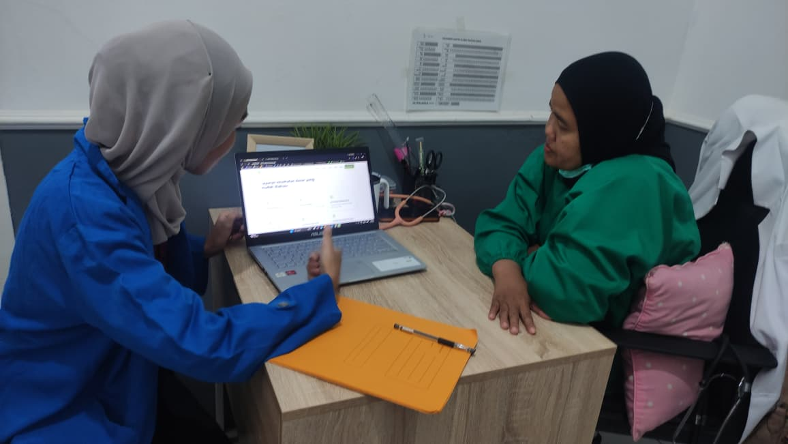
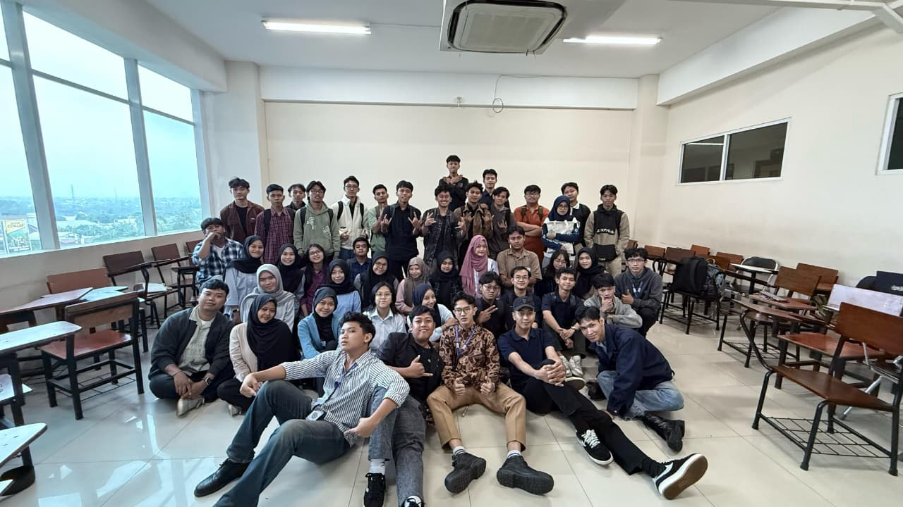
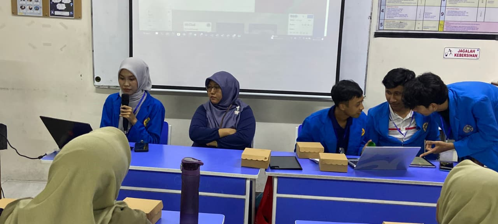
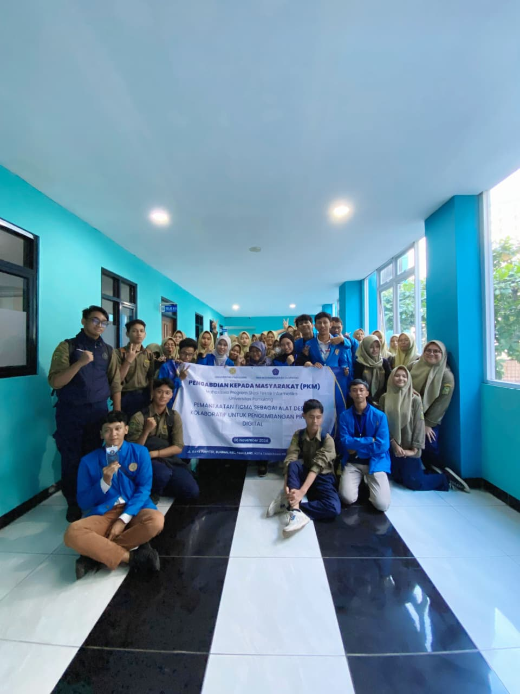

Universitas Pamulang
S1 Teknik Informatika
Selama perkuliahan mengembangkan kompetensi di bidang web development, database, UI/UX, networking, dan analisis data melalui berbagai proyek akademik.
Hello, I'm
Fresh Graduate Teknik Informatika
Database • Web Application • IT Fundamentals
Fresh graduate S1 Teknik Informatika Universitas Pamulang dengan ketertarikan pada pengelolaan database, pengembangan aplikasi web, dan dasar-dasar dukungan TI. Portfolio ini berisi project akademik, tugas akhir, dan dokumentasi kegiatan yang pernah saya kerjakan selama perkuliahan.
Profile
Saya merupakan fresh graduate S1 Teknik Informatika Universitas Pamulang yang memiliki minat pada bidang database, application development, web development, dan pengelolaan sistem informasi.
Selama perkuliahan, saya mengembangkan beberapa proyek berbasis web dan database, termasuk sistem pengelolaan stok obat, sistem PPDB berbasis web, serta website profil klinik.
Portfolio ini menampilkan beberapa project yang berkaitan dengan pengembangan aplikasi, pengelolaan database, deployment website, data, networking, dan UI/UX sebagai kemampuan pendukung.
Academic Background
S1 Teknik Informatika
Selama perkuliahan mengembangkan kompetensi di bidang web development, database, UI/UX, networking, dan analisis data melalui berbagai proyek akademik.
Sistem PPDB berbasis website di RA Khairul Ummah.
Sistem pengelolaan stok obat berbasis web.
Penerapan clustering dan association rules pada penelitian tugas akhir.
Dua publikasi ilmiah terkait project pengembangan sistem.
Capabilities
Database-Driven Work
Selected academic and project-based work in database-driven application development, web development, and system implementation.
Application Developer • Database & Web Development
Aplikasi berbasis web untuk pengelolaan data dan stok obat, transaksi obat, monitoring status stok, rekomendasi restock, serta analisis pola pembelian obat.

Project ini dikembangkan sebagai implementasi penelitian tugas akhir dengan studi kasus Klinik Pratama Kencana. Sistem mengintegrasikan pengelolaan database, transaksi stok, pengelompokan kondisi persediaan, serta analisis pola penjualan dalam aplikasi berbasis web.
View Live System

Website Klinik
Profile & service information
Web Developer
Website profil Klinik Pratama Kencana yang dikembangkan untuk menyediakan informasi layanan kesehatan dan informasi klinik secara online.

Sistem Penerimaan Peserta Didik Baru berbasis web yang dikembangkan untuk membantu proses pendaftaran dan penyampaian informasi sekolah.
Supporting Work
Beberapa eksplorasi desain antarmuka web dan mobile yang dibuat menggunakan Figma.


Work Background
Juni 2022 - September 2022
Jjmuezza Hijab • Part-time
Mengelola pesanan, komunikasi pelanggan, dan pembaruan data produk pada kanal penjualan online.
November 2022 - Maret 2023
Oriflame • Part-time
Mendukung aktivitas promosi, komunikasi pelanggan, dan proses pemesanan melalui media digital.
Campus Activities
Informatics Study Club (ISC)
Universitas Pamulang
Berpartisipasi dalam kegiatan Informatics Study Club pada bidang UI/UX untuk mengembangkan kemampuan desain antarmuka, penggunaan Figma, collaborative learning, dan diskusi mengenai pengembangan produk digital.

Pengabdian Kepada Masyarakat
SMA Muhammadiyah 8 Ciputat • November 2024
Berpartisipasi dalam kegiatan Pengabdian Kepada Masyarakat yang berfokus pada pemanfaatan Figma sebagai alat desain kolaboratif untuk pengembangan projek digital.
View PKM Publication

Credentials
Certification
Training
Final Project & Publications
Penelitian tugas akhir yang mengimplementasikan K-Means Clustering untuk pengelompokan stok obat dan Association Rules Apriori untuk analisis pola penjualan obat dalam aplikasi berbasis web.
Read PublicationPublikasi ilmiah terkait pengembangan sistem PPDB berbasis web untuk membantu proses pendaftaran dan penyampaian informasi sekolah.
Read Publication